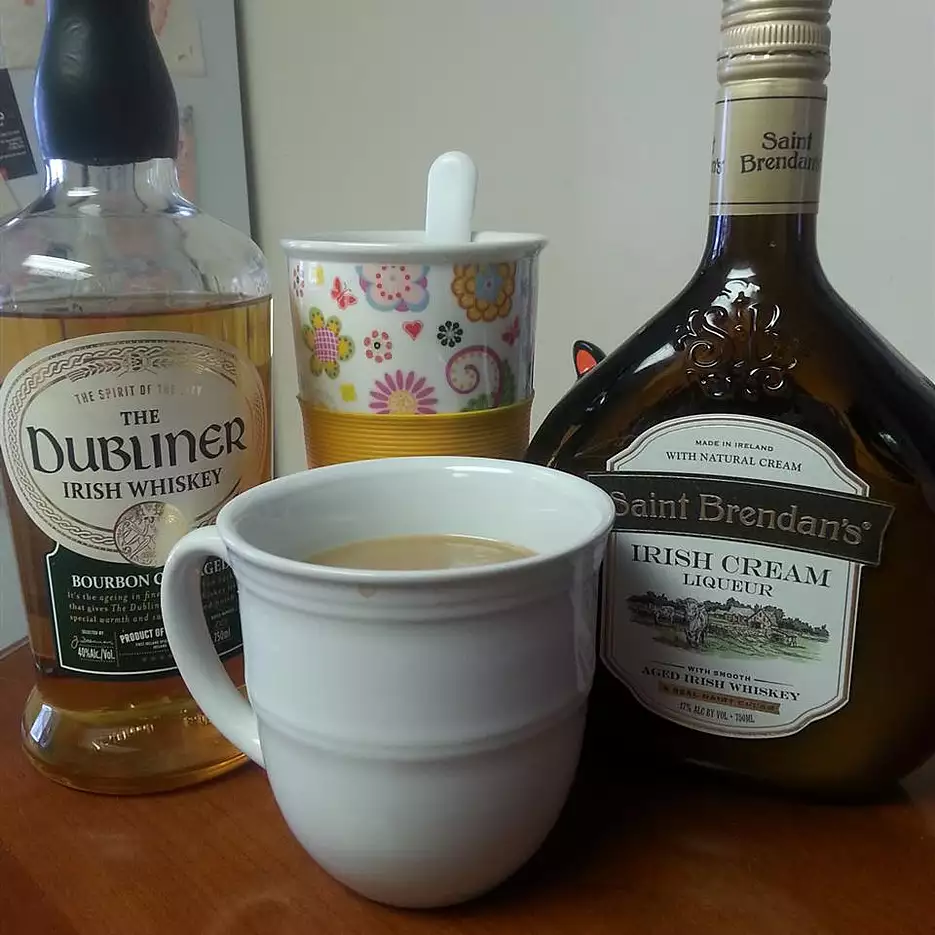

Irish Coffee

Ingredients
- 1 (1.5 fluid ounce) jigger Irish cream liqueur
- 1 (1.5 fluid ounce) jigger Irish whiskey
- 1 cup hot brewed coffee
- 1 tablespoon whipped cream
- 1 dash ground nutmeg
Steps
- In a coffee mug, combine Irish cream and Irish whiskey. Fill mug with coffee. Top with a dab of whipped cream and a dash of nutmeg.